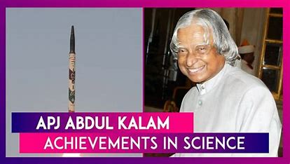
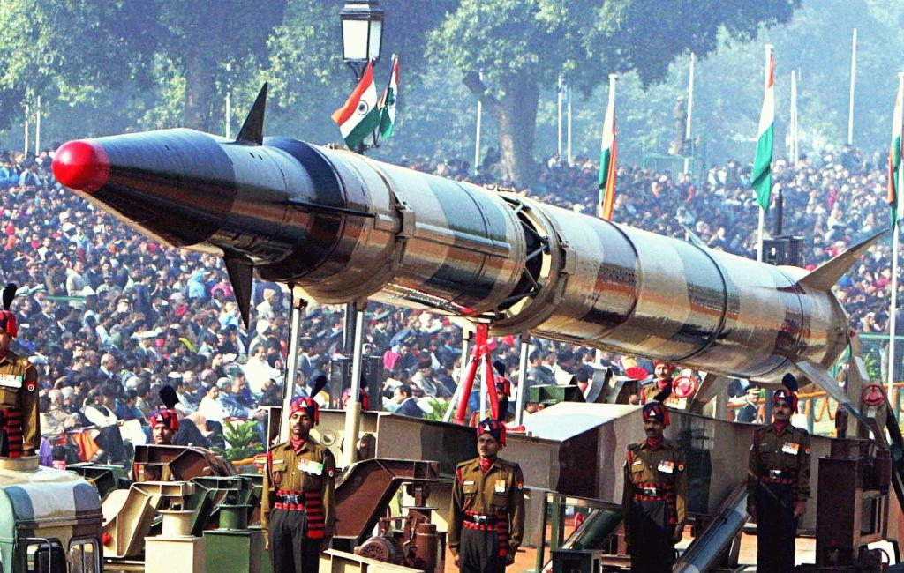
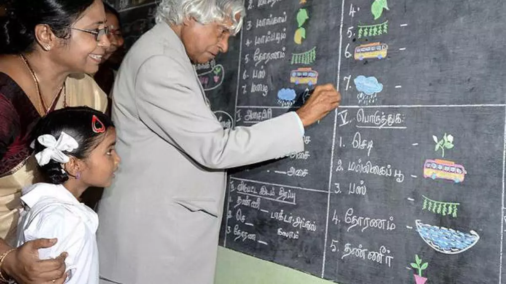

Achievements of APJ Abdul Kalam

APJ Abdul Kalam was the 11th President of India and is widely celebrated as the "People's President" for his immense contributions to science, technology, and the socio-economic development of India1.
Some of his achievements include:
- Heading multiple nuclear tests at Pokhran, which made India a nuclear power.
- Leading India's two major science research organisations - Defence Research and Development Organisation (DRDO) and Indian Space Research Organisation (ISRO).
- Establishing himself as the “missile man of India”

